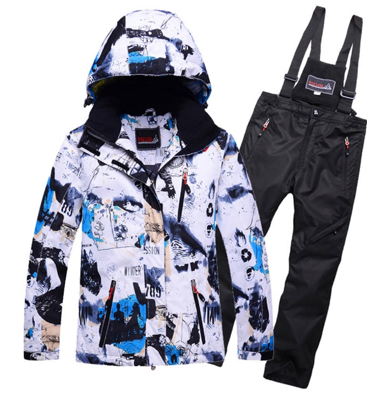
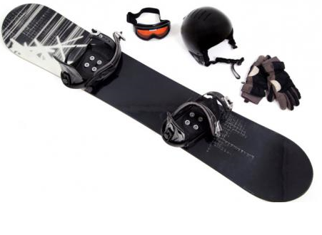

ROPA
La ropa es, sino la más, una de las cosas más importantes del snowboard.
Desde mi experiencia he de deciros que no hay que escatimar en gastos con la ropa,
porque ya me ha pasado un par de veces el caerme e ir todo el dia con el culo mojado y resfriarme.
Lo que tienes que llevar sí o sí a la nieve es (mis gastos):
Calcetines de esquiar=10€
Lo más recomendable es gastar en marcas especializadas, sobre todo los chaquetones y pantalones que es lo que os va aprotejer de mojaros

MATERIAL
La otra parte es el material. En este campo no puedo dar una opión extensa ya que llevo solo 2 años practicando este deporte.
En este campo vamos a ver 4 partes:
Tabla: la tabla es practicamente el deporte entero. Aquí vais a encontrar todo tipo de precios así que si vais a adquirir una os recomiendo hablar con un especialista en persona.
Gafas: las gafas desde mi punto de vista son muy importes, nos protegen del posiblemente nuestro mayor problema en la monatña, el sol.Aquí recomiendo invertir porque nos jugamos que el sol reflecte en la nieve que es translucida y nos deje ciegos.
Casco: el casco nos va a proteger de caídas y golpes en la nieve así que aquí hay que comprar un casco de nieve, no vale cualquiera de otro tipo
Guantes: para el snowboard yo recomiendo manoplas en vez de guantes, porque para el tema de agarre de tabla la manopla permite hacer este movimiento sin que temiblemente se te quede algún dedo mal puesto como en el caso de los guantes
